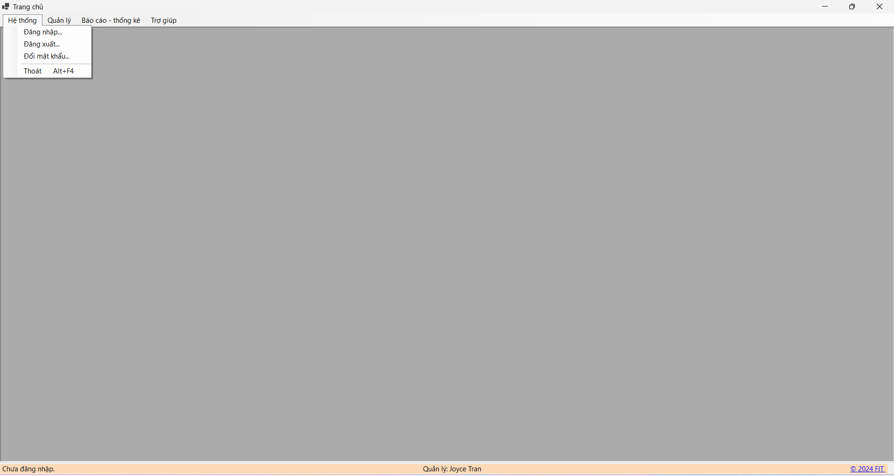

Hướng dẫn sử dụng Màn hình chính.
Bước 1:Khởi động ứng dụng quản lý thức ăn cho mèo.
Bước 2:Khi ứng dụng khởi động, form Home sẽ là giao diện đầu tiên hiển thị (nếu ứng dụng được thiết kế theo cách này). Nếu không, bạn có thể nhấp vào mục "Home" hoặc biểu tượng trang chủ trong menu hoặc thanh công cụ để mở form Home.
Thanh Menu:Chứa các tùy chọn như "Nhân Viên", "Thức Ăn", "Khách Hàng", "Đăng Xuất", "Thay Đổi Mật Khẩu", v.v.
Thanh Công Cụ: Chứa các biểu tượng nhanh để truy cập các chức năng quan trọng như thêm mới, lưu, xóa, tìm kiếm, v.v. Khu vực Hiển Thị Chính: Hiển thị thông tin tổng quan về tình hình hoạt động, như số lượng thức ăn trong kho, số lượng đơn hàng, số lượng nhân viên, v.v. Thông Báo và Tin Tức: Một phần nhỏ có thể hiển thị thông báo quan trọng hoặc tin tức liên quan đến công ty hoặc sản phẩm.